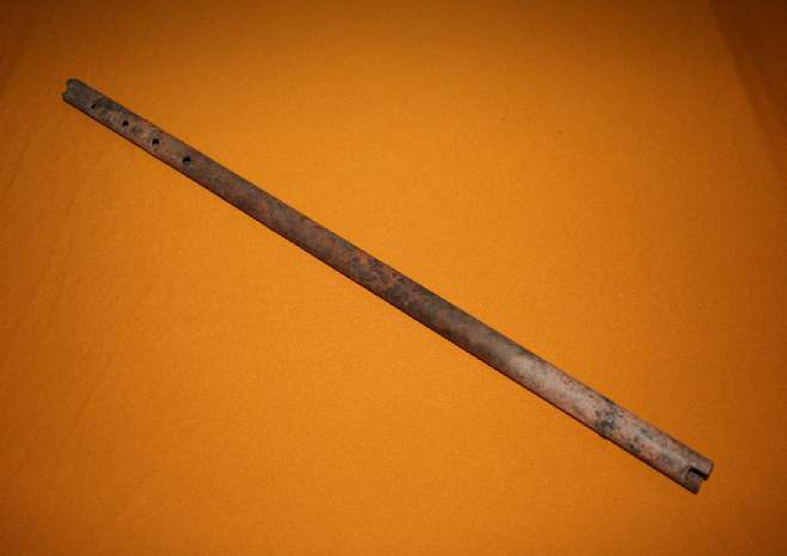

The temímby púku of the Ava people
Sketch 022
Home > Blog A Musician's Log > Sketch 022
The Ava, a Guarani-speaking people of the Bolivian and Argentine lowlands, preserved a complex musical tradition shaped by Amazonian, Arawak, Andean, and colonial influences despite centuries of warfare, displacement, and missionary intervention. Closely tied to rituals such as the aréte guásu, their musical heritage includes drums, flutes, trumpets, whistles, idiophones, and the singular turumi violin, all generally handcrafted by the performers themselves and embedded in ceremonial, social, and symbolic practices linking music, dance, memory, sexuality, warfare, and relations between the living and the dead.
Also called mímby púku ("long flute") or temímby ñembó'y ("vertical flute," especially in Izozog), this is a vertical flute without a blowing conduct, similar to the Andean quena. It is made from a piece of the cactus known as sacharrosa (Pereskia sacharosa) or from a segment of takuapúku (takuára púku, "long cane"), or even from industrial copper, bronze, or iron pipe.
Despite its clear Andean origin, it is a widespread instrument among the Ava people. Its length ranges from 50 to 60 cm (two hand spans and four fingers) and it has a square bevel and 5 holes: 4 finger holes on the front and one for tuning on the side. To place them, builders measure three fingers from the middle of the tube and make the first hole; from there, three more equidistant holes are drilled in a row to the distal end. The last hole, which is covered by the ring finger (since the little finger is never used), is made to one side: left or right, depending on whether the musician is left- or right-handed. In cane instruments, the holes are drilled with a red-hot iron; in metal instruments, with a file or a drill.
It is a vehicle that channels the sexual potency of the musician, always a man. It is played with the accompaniment of an angúa guásu and one or more angúa rái in the dances of the summer period, especially those of the aréte, or in a solitary, improvised, and personal way, to express intimate feelings.
More information about these sound artifacts can be found in the free-access digital book Musical instruments of the Ava people, accessible through the "Digital books on music. Series 1" section.